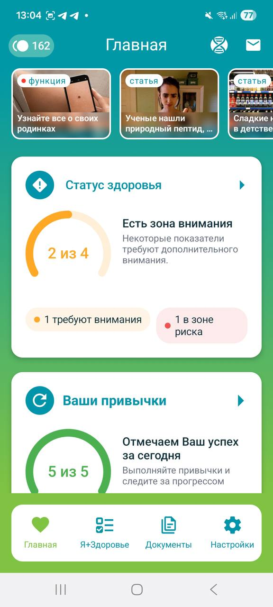

Показатели
Сначала выберите, что хотите вести
Приложение помогает вести ключевые показатели. Подробные шаги будут доступны в FAQ и документации.
Демонстрационный экран
Приложение «Здоровье»
Отмечайте день, смотрите шаги, сон и пульс, храните анализы и открывайте нужный раздел без блуждания по всему приложению.
Ссылки станут доступны после публикации отдельных FAQ и документации.
Выбрать задачу
Информационная поддержка · не заменяет консультацию врача
Основные маршруты
Здесь появятся реальные экраны приложения. Пока их место занимают подписанные демонстрационные макеты с тем же размером и порядком.
Показатели
Приложение помогает вести ключевые показатели. Подробные шаги будут доступны в FAQ и документации.
Динамика
История показателей помогает ориентироваться в данных и возвращаться к нужному периоду без лишних переходов.
Подключение данных
Материалы поддержки объяснят назначение интеграций и шаги подключения совместимого сервиса.
Следующий шаг
FAQ поможет быстро сориентироваться, а документация проведёт по последовательным шагам. Реальные ссылки будут подключены, когда материалы будут опубликованы.
Публикация материалов ожидается.